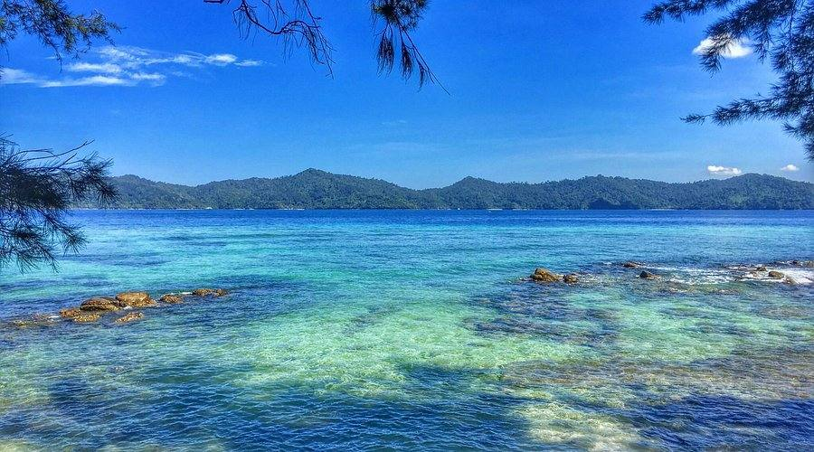
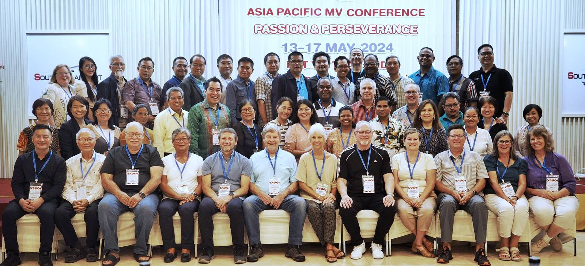

A family of Christians committed to reaching the world with the love of Jesus Christ
Missionary Ventures Australia (MVA) is an interdenominational Christian organisation and part of Missionary Ventures International based in Orlando, Florida, USA. We are a family of Christians from around the globe bound together by our love for God and for others. We all share the common goal of reaching the world with the love of Jesus Christ and the Gospel of the Kingdom.
MVA seeks to promote and establish effective interdependent partnerships so we can help equip and support indigenous Churches and Christian organisations within the Asia/Pacific region helping them to fulfill their God given vision and mandates. We do this through the raising up and sending out of dynamic short term mission teams that address training needs, provide resources, assist with strategic building projects and support emergency relief needs.

We serve the Church through multiple ministry expressions
Providing resources and training to national church leaders establishing new congregations across the Asia/Pacific region.
Partnerships with local churches and Christian organisations, so the work of the Gospel can be shared more widely.
Short-term teams sent when a national partner asks for training or another particular job.
Responding quickly to crisis situations with compassionate support and practical assistance.
Mobilizing financial resources to support strategic building projects and infrastructure development.
Supporting Christian education initiatives that disciple young people and build community capacity.
Part of a growing international movement reaching nations across the globe
Headquarters in Orlando, Florida serving as the international office and coordinating global initiatives.
Operating throughout New Zealand and the Pacific region with a focus on island partnerships.
Serving communities across Southern Africa with emphasis on church planting and leadership development.
Engaging European partners and mobilizing mission teams from the United Kingdom and Europe.
Whether through financial support, participation in a mission trip, or volunteer engagement, you can be part of what God is doing across the Asia/Pacific region.